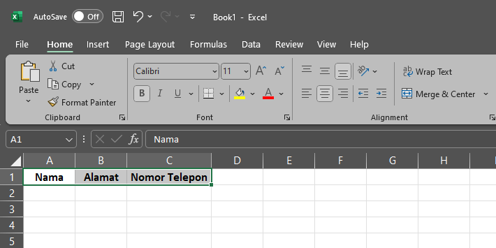
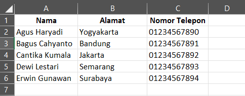
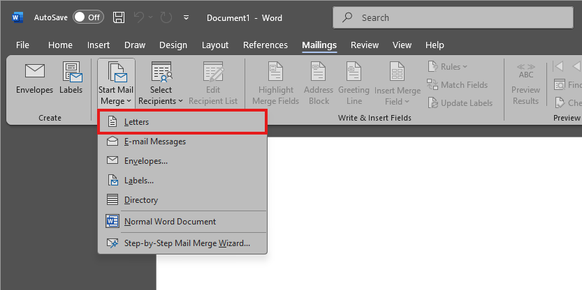
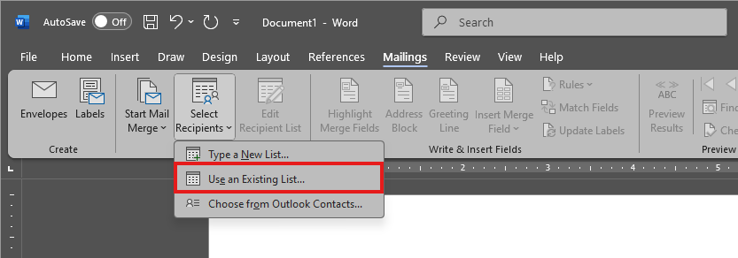
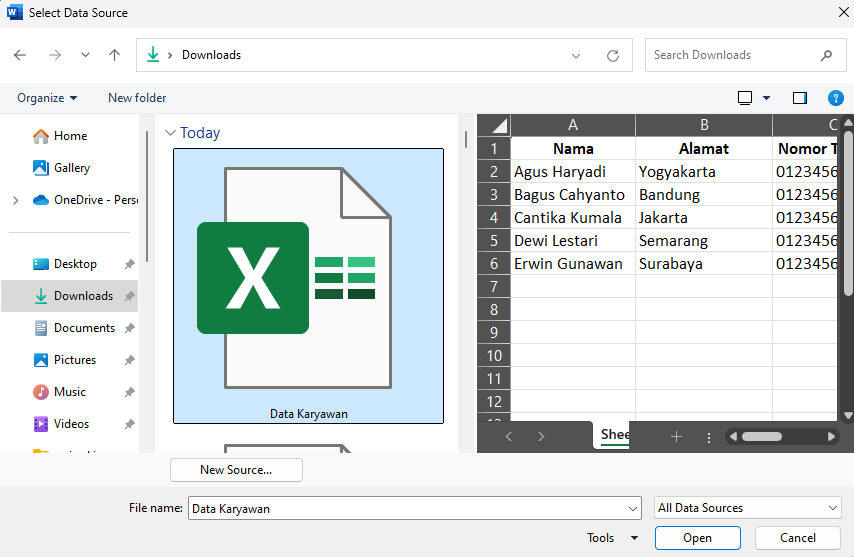
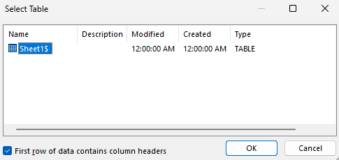
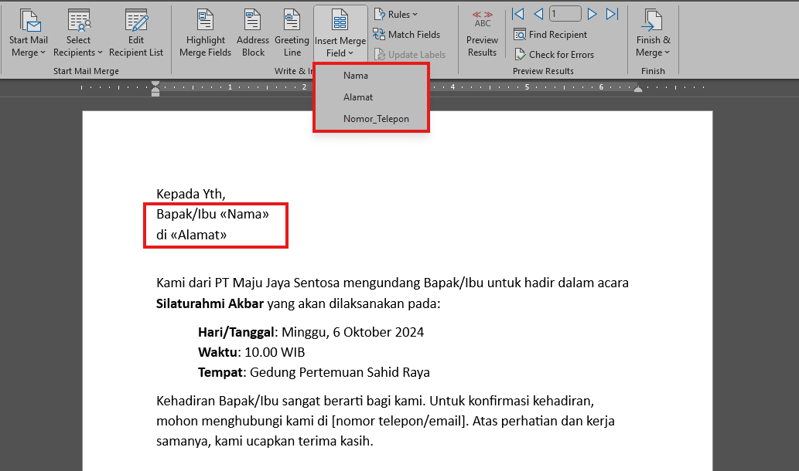
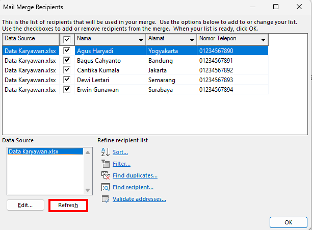
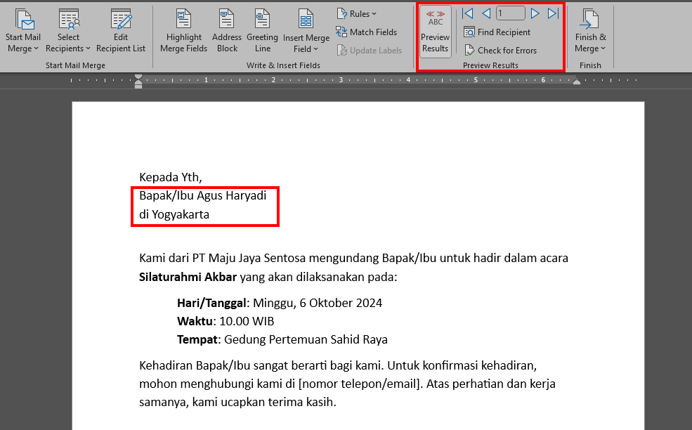
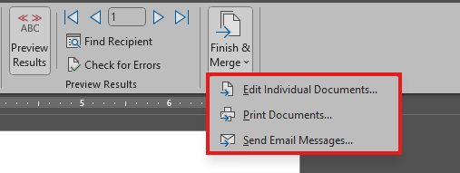

Menguasai Mail Merge (Surat Massal)
Integrasi Cerdas Microsoft Word & Excel untuk Otomatisasi Dokumen Massal: Surat Resmi, Sertifikat, dan Label Stiker Undangan berbasis Studi Kasus Nyata.
Konsep Dasar & Komponen Mail Merge
Pemahaman Konseptual
Memahami definisi Mail Merge dan efisiensinya dalam menghasilkan ratusan dokumen personal secara otomatis.
Dua Pilar Utama
Membedakan peran Main Document (Word) dan Data Source (Excel) dalam integrasi aplikasi perkantoran.
Pengertian Mail Merge & Mengapa Kita Membutuhkannya?
Mail Merge (Surat Massal) adalah fitur integrasi aplikasi perkantoran yang memungkinkan pengguna untuk menggabungkan satu naskah master dengan basis data eksternal secara otomatis sehingga menghasilkan banyak dokumen personal dalam waktu singkat.
Pernahkah kalian membayangkan seorang sekretaris panitia yang harus mencetak 500 sertifikat penghargaan, 300 lembar surat undangan rapat wali murid, atau ribuan label stiker dengan nama dan alamat yang berbeda-beda?
Jika naskah tersebut diketik secara manual satu per satu dengan teknik copy-paste, pekerjaan tersebut akan memakan waktu berhari-hari dan sangat berisiko tinggi menimbulkan kesalahan pengetikan (human error).
Dua Pilar & Komponen Utama Mail Merge
a. Main Document (Word)
Naskah baku di Microsoft Word berisi kop surat, logo, dan tata letak yang sifatnya tetap untuk seluruh penerima.
b. Data Source (Excel)
Tabel terstruktur di Microsoft Excel yang menyimpan informasi dinamis tiap individu (nama, alamat, nomor induk, wali, dll).
c. Merge Field (Penanda)
Kode penampung seperti «Nama_Siswa» yang menjadi pintu masuk data dari kolom Excel yang bersesuaian.
d. Merged Document
Dokumen hasil akhir penggabungan yang siap dicetak langsung ke printer atau diekspor menjadi ratusan halaman file PDF terpisah.
Cara Kerja Integrasi Word & Excel
Bagaimana Microsoft Word mengetahui letak nama dan alamat yang harus diganti? Mekanisme Mail Merge bekerja dengan memetakan judul kolom (Header) pada file spreadsheet Excel menjadi variabel penampung di lembar naskah Word.
Bayangkan Main Document seperti lembar formulir berstempel resmi sekolah yang memiliki kolom kosong: "Nama: .........., Alamat: ..........". Sementara Data Source adalah Buku Induk Kesiswaan. Mail Merge bertindak seperti juru tulis kilat yang menyalin data baris demi baris secara otomatis tanpa pernah salah baris!
Alur 5 Tahap Penggabungan Dokumen
- Apa perbedaan mendasar antara Main Document dan Data Source? Main Document berisi tata letak & teks statis di Word, sedangkan Data Source berisi basis data baris record dinamis di Excel.
- Mengapa Mail Merge jauh lebih aman dibanding teknik copy-paste manual? Karena mencegah kelalaian manusia (typo), menjamin format 100% konsisten, dan menghemat ratusan jam kerja.
Persiapan Dokumen & Basis Data
Kaidah Tabel Excel
Menerapkan 4 aturan emas pembuatan data di spreadsheet tanpa merged cell.
Format Dokumen
Mengenal variasi format: Surat (Letters), Sertifikat, Amplop, dan Label Stiker 103.
4 Aturan Emas Data Source di Excel
Standarisasi DataBaris Pertama Wajib Header
Baris ke-1 di Excel harus berisi judul kolom (misal: Nama, NISN, Alamat). Jangan menaruh judul surat atau kop di baris 1 spreadsheet!
Dilarang Merged Cell
Jangan menggabungkan sel (Merge & Center) pada tabel, terutama header kolom. Sel yang dimerge akan merusak indeks pembacaan kolom oleh Word.
Hindari Baris Kosong
Baris kosong di tengah-tengah kumpulan data akan dianggap oleh Word sebagai tanda akhir dari tabel basis data, sehingga sisa data di bawahnya tidak terbaca.
Simpan & Tutup File Excel
Tutup jendela aplikasi Excel sebelum file ditautkan ke Word agar tidak muncul pesan error sistem "Database is locked by another process".
Ragam Format Main Document
| Tipe Dokumen | Karakteristik & Pemanfaatan | Contoh Kasus Nyata |
|---|---|---|
| 1. Letters (Surat) | Format naskah baku halaman vertikal (A4/F4) dengan penempatan data personal penerima. | Surat undangan wali murid, surat panggilan beasiswa. |
| 2. Certificates & ID | Desain grafis horizontal (landscape) dengan penempatan Merge Field pada nama & predikat. | Sertifikat seminar, piagam kejuaraan, kartu ujian. |
| 3. Labels (Stiker) | Satu lembar kertas stiker kisi (grid). Wajib memakai kode «Next Record» untuk berganti data tiap kotak. | Stiker undangan 103 / 121, label barcode buku perpus. |
| 4. Envelopes (Amplop) | Mencetak langsung alamat tujuan pada bagian depan amplop surat resmi sekolah. | Amplop dinas kepala sekolah, amplop ijazah siswa. |
Saat membuat label stiker, setelah menyisipkan Merge Field di kotak pertama, kamu wajib mengklik tombol "Update Labels" di tab Mailings agar kode «Next Record» tersalin otomatis ke seluruh kotak stiker lainnya!
Mengapa pada pembuatan dokumen jenis Labels kita membutuhkan perintah khusus «Next Record»? Apa yang terjadi jika perintah itu lupa disisipkan?
Jawaban: Tanpa «Next Record», Word akan mengulang nama orang yang sama pada seluruh kotak stiker di lembar tersebut, alih-alih berpindah ke penerima berikutnya.
Fitur Lanjutan, Aturan & Troubleshooting
Logika & Switch Codes
Menguasai aturan Rules If...Then...Else dan switch format rupiah serta format tanggal.
Troubleshooting Kendala
Mendiagnosis serta mengatasi 6 masalah paling umum pada Mail Merge secara tepat.
Logika Aturan & Format Switch
Menyisipkan teks dinamis bersyarat dan merapikan tampilan angka desimal serta format tanggal Indonesia.
Ingin menyapa dengan kata "Bapak" atau "Ibu" sesuai jenis kelamin secara otomatis? Manfaatkan menu Rules → If...Then...Else...:
If Jenis_Kelamin Equal to "L" Insert "Bapak" Otherwise Insert "Ibu"
Hasilnya: Siswa laki-laki tertulis "Kepada Bapak Budi", dan perempuan tertulis "Kepada Ibu Siti".
Tanggal di Excel sering muncul terbalik di Word (standar US). Tekan Alt + F9 lalu ketik switch:
{ MERGEFIELD Tgl @ "dd MMMM yyyy" }
Nominal Rp 500.000 sering tampil polos 500000 di Word. Tekan Alt + F9 lalu tambahkan switch:
{ MERGEFIELD Biaya # "Rp #,##0.00" }
Enam Masalah Umum & Solusinya (Troubleshooting)
Diagnosis Cepat').<< >> di keyboard.Panduan Praktik Langkah demi Langkah
Kemandirian Praktik
Menyiapkan basis data di Excel dan naskah template master di Word secara mandiri.
Penyelesaian Dokumen
Mengintegrasikan field, meninjau hasil pratinjau, dan mengekspor dokumen akhir.
Tahap 1: Buat File Sumber Data di Excel
Menyiapkan tabel data penerima yang akan dimasukkan ke dokumen Word. File ini diisi dengan informasi seperti nama, alamat, atau nomor telepon penerima yang akan dimasukkan ke dokumen Word.
Nama, Alamat, dan Nomor Telepon.


Data Karyawan.xlsx, kemudian tutup jendela Excel.
Tahap 2: Siapkan Dokumen Mail Merge di Word
Setelah sumber data di Excel siap, sekarang Anda perlu membuat dokumen di Word yang akan menjadi template mail merge.

[Nama Lengkap] atau [Alamat Penerima] agar lebih mudah.
Tahap 3: Hubungkan dengan Sumber Data Excel
Apabila naskah dokumen Anda sudah siap dan sudah diberi teks penanda, selanjutnya Anda perlu menghubungkan dokumen dengan sumber data dari Excel yang tadi sudah dibuat. Dengan begitu, informasi penerima akan terisi secara otomatis di tempat yang sesuai.


Sheet1$. Pilih sheet tersebut dan klik OK.

Tahap 4: Masukkan Data dari Excel ke Dokumen
Sekarang, file Excel yang berisi data penerima sudah terhubung ke dokumen Word Anda. Berikutnya, Anda bisa mulai menyisipkan data penerima ke teks penanda yang sesuai di dokumen.
[Nama].
[Nama] yang sudah digantikan dengan data dari Excel.


Tahap 5: Pratinjau Hasil Mail Merge
Sebelum menyelesaikan prosesnya, lihat pratinjau hasil mail merge lagi untuk memastikan bahwa semua data dari Excel sudah terhubung dan ditampilkan dengan benar sesuai keinginan Anda.
[Nama] dengan nama penerima sebenarnya.

Tahap 6: Selesaikan dan Simpan Mail Merge
Apabila sudah puas dengan hasil yang ditampilkan di pratinjau, Anda bisa menyelesaikan proses pembuatan mail merge:

Apabila memilih untuk menyimpan dokumen di komputer, pastikan Anda menamainya dengan benar dan rapi untuk memudahkan proses pengiriman atau pencetakan dokumen.
Latihan Mandiri: 4 Studi Kasus Evaluasi
Uji kemampuan analisis, diagnosis kesalahan, dan keterampilan logika Mail Merge kamu dengan menelaah 4 studi kasus berikut:
1 Surat Pengumuman Kelulusan
Kasus 1SMK Teladan ingin membuat 360 surat pengumuman kelulusan. Dokumen memuat Kop Sekolah, Teks Pengantar, Nama Siswa, NISN, Jurusan, Nilai Rata-rata, dan Status (LULUS / TIDAK LULUS).
2 Troubleshooting Data Excel Rusak
Kasus 2Doni membuat tabel di Excel: baris 1 diisi judul besar "DAFTAR TAMU", baris 2 kosong, dan baris 3 ia menggabungkan kolom A & B (Merged Cell). Ketika dihubungkan ke Word, field tidak terbaca.
3 Logika Aturan Rules If...Then...Else
Kasus 3Dalam piagam kejuaraan olahraga, panitia ingin naskah secara dinamis menampilkan kalimat "Juara Pertama" jika skor >= 90, dan "Peserta Berprestasi" jika skor < 90.
4 Masalah Label Stiker Undangan (Kode 103)
Kasus 4Rani mencetak satu lembar stiker label undangan berisi 12 kotak nama. Namun saat dicetak, nama yang muncul di ke-12 kotak tersebut adalah nama tamu urutan pertama yang berulang 12 kali.
Kamus Istilah Mail Merge (Glosarium)
Berkas eksternal (spreadsheet Excel/CSV) yang menyimpan data penerima secara terstruktur.
Dokumen master di Word yang berisi teks baku, kop surat, dan tata letak dasar.
Penanda khusus («Field») di Word yang berfungsi sebagai pintu masuk data dari Excel.
Instruksi wajib pada dokumen Label untuk memerintahkan sistem beralih ke baris data berikutnya.
Fitur peninjauan pratinjau untuk melihat teks asli saat Merge Field terisi data rekor nyata.
Perintah eksekusi puncak untuk menggabungkan seluruh dokumen ke berkas baru atau printer.
Fitur logika kondisional untuk menampilkan kalimat dinamis berdasarkan kriteria tertentu.
Kode modifikasi (\@ untuk tanggal, \# untuk angka) guna memperbaiki format Word via Alt+F9.
Ilyas Fandhi Anggara, S.Kom
PenyusunGuru Informatika • SMA Negeri 4 Yogyakarta
“Otomatisasi bukan tentang menggantikan manusia, melainkan membebaskan kita dari rutinitas repetitif untuk fokus berkarya pada hal yang bermakna.”